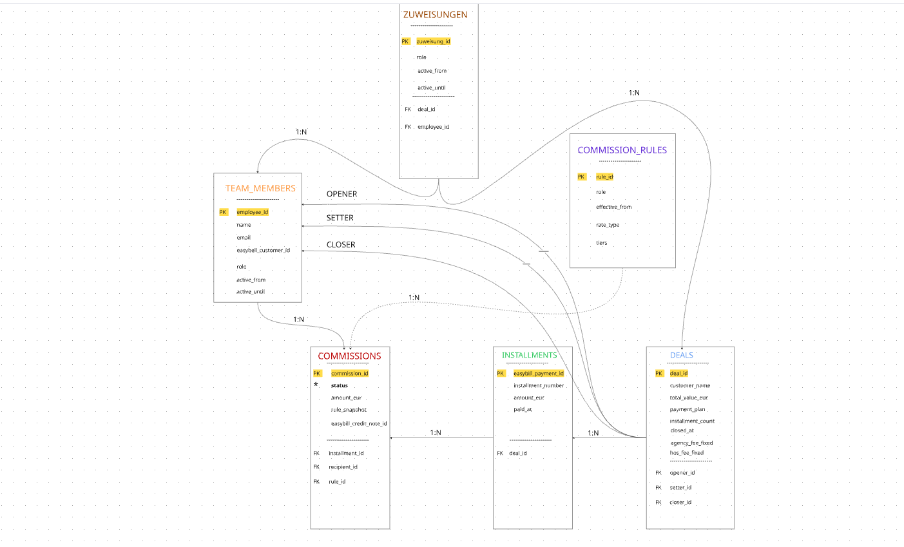
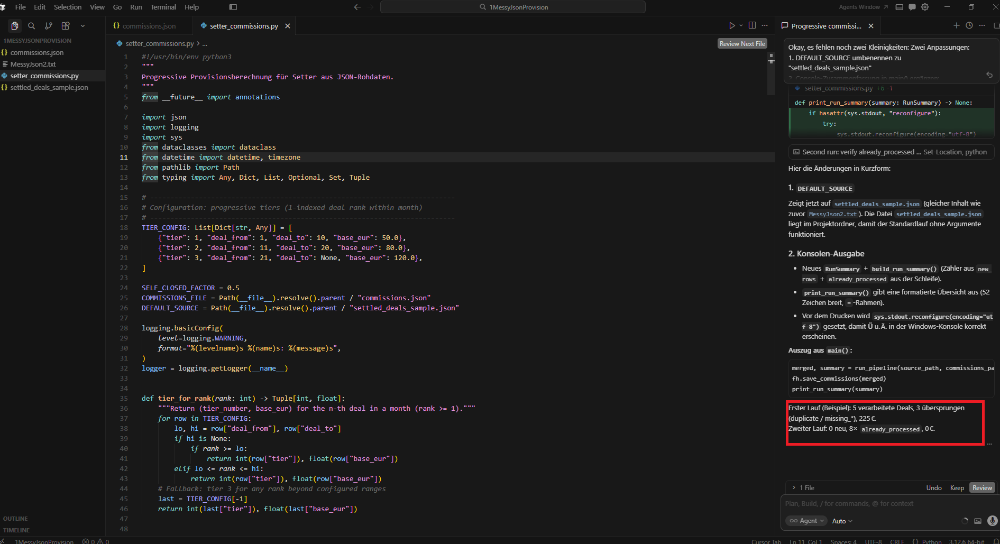

Social.Academy — AI Operations Manager
Florian Kuehnast · April 2026
4 Teile · Architektur · Code · AI-Collaboration · Code Review
| Tabelle | Zweck |
|---|---|
| DEALS | Kerndaten des Vertragsabschlusses (Snapshot der Sales-Rollen) |
| INSTALLMENTS | Eine Rate = ein Record, verknüpft mit easybill_payment_id |
| TEAM_MEMBERS | Alle Mitarbeiter (aktive + ehemalige) |
| COMMISSION_RULES | Provisionssätze je Rolle und Deal-Typ |
| COMMISSIONS | Berechnete Provision pro Empfänger und Installment |
| ZUWEISUNGEN | Dynamische AM-Zuweisung (active_from / active_until) |
Key Design: opener_id, setter_id, closer_id → Snapshot im DEALS-Record (unveränderlich). AM-Zuweisung → dynamisch via ZUWEISUNGEN (nachträglich änderbar).
ZUWEISUNGEN: zuweisung_id (PK), deal_id (FK), employee_id (FK), role, active_from, active_until

Miro — Airtable Datenmodell
Szenario 1 — Doppelzahlung: Make.com sucht beim Webhook die easybill_payment_id in INSTALLMENTS. Existiert der Record → Workflow bricht ab. Unique Key auf easybill_payment_id als Datenbankschutz.
Szenario 2 — Refund: Offene COMMISSIONS → Status storniert. Bereits ausgezahlte → neuer Record mit negativem Betrag + Status forderung_offen. Ursprüngliche Records bleiben (Audit-Trail).
Einschränkung: forderung_offen löst keinen automatischen Mahnungs-Workflow aus — manueller Schritt nötig.
Szenario 3 — Personalwechsel: Sales-Snapshots → Rate geht an den Deal-Closer. AM-Wechsel → neuer ZUWEISUNGEN-Record. Bei Zahlungseingang: active_from ≤ paid_at und active_until leer oder in Zukunft.
Einschränkung: Änderung der ZUWEISUNGEN ist manuell.
| Fehler | Behandlung |
|---|---|
| Duplikat in Input | Skip → duplicate_in_source |
| setter_email null | Skip → missing_setter_email |
| closed_at null | Skip → missing_closed_at |
| Bereits in commissions.json | Skip → already_processed |
Verifikation: 5 verarbeitet / 3 übersprungen · 225 € Gesamt · Self-Close: 50 % des Staffelsatzes

Console — Lauf (Processed / Skipped / Total)
Processed: 5 | Skipped: 3 | Total commission: 225.00 EURErwarteter Output (Referenz)
Tool-Stack: Gemini [Thinking] + Cursor [Auto]
Beschleunigt: (1) Datenmodell-Grundstruktur — AM/Sales (Snapshot vs. dynamisch) → 5 auf 6 Tabellen. (2) Cursor-Prompt-Iteration — 3 Runden bis Constraints stimmen; nahezu vollständiges Skript.
| Fehler | Was Gemini sagte | Was richtig ist |
|---|---|---|
| Self-Close | self_closed = true → voller Satz | 50 % des Staffelsatzes |
| Null setter_email | Fallback no_setter@company.com | Skip + Log |
| Null closed_at | Nicht als Skip | Skip + Log (Datum fehlt für Staffel) |
| Deduplizierung | Letzten Eintrag behalten | Skip + Log (keine stille Verfälschung) |
Fazit: AI lieferte Geschwindigkeit — Urteilsvermögen war manuell nötig.
Drei Korrekturen bevor wir den Prompt finalisieren:
Erstens: Sprache ist Python, nicht JavaScript.
Zweitens: Bei Deduplizierung nicht "letzten Eintrag behalten" —
sondern überspringen und loggen. Wir wollen keine stille Datenverfälschung.
Drittens: Die Self-Close-Logik ist invertiert.
self_closed = true bedeutet Setter = Closer,
also 50% der Staffel-Provision — nicht der volle Satz.
Außerdem fehlt noch der Idempotenz-Mechanismus:
beim Start bestehende commissions.json laden und
bereits vorhandene deal_ids überspringen.
Kannst du den Cursor-Prompt mit diesen Korrekturen neu generieren?Buggy Formel:
{{first(split(first(4.contacts[].name); " "))}}Fehler:
DataError: 'Krisztina Verzar' is not a valid array.Root Cause: contacts[].name ist kein Pfad — impliziter Map-Operator. Mehrere Kontakte → Array → first() ok. Ein Kontakt → Make flacht zu String → first() crasht. Live-Betrieb maskiert Tests mit mehreren Kontakten nicht.
Fix:
{{first(split(4.contacts[1].name; " "))}}contacts[1].name ist immer String. contacts[].name für Loops; contacts[1].name für Single-Value. Make fügt [] automatisch ein → häufiger Fehler.
| Deliverable | Link |
|---|---|
| GDrive (alle Dateien) | Google Drive öffnen |
| Gemini — Teil 1 Architektur | Chat öffnen |
| Gemini — Teil 2 Code/Prompts | Chat öffnen |
| Gemini — Teil 4 Code Review | Chat öffnen |
GDrive: setter_commissions.py, README, settled_deals_sample.json, commissions.json, ai_collaboration.md, szenarien.md, code_review.md, Cursor Screenshots